Farmer Risk Control Behaviors - Simulation Results
This report presents the results of an agent-based simulation of farmers' risk control behaviors in a food safety context. The model explores how different types of farmers (risk neutral, risk averse, and risk loving) adjust their risk control efforts in response to testing regimes, penalties, and technology levels.
Model Details
Key Features of the Model:
- Three farmer types: Risk Neutral, Risk Averse, and Risk Loving
- Exponential function for risk probability
- Cost function based on testing probabilities and penalties
- Dynamic technology adaptation
- Neighbor influence on decision making
Key Equations:
Contamination Rate Equation (3):
σjt = e(-cjt × kj)
where σjt is the contamination rate, cjt is the risk control effort, and kj is the technology level of farmer j at time t.
Cost Function Equation (4):
f = (f1β1 + f2(1-β1)β2 + f3(1-β1)(1-β2)β3 + f4(1-β1)(1-β2)(1-β3)β4 + f5(1-β1)(1-β2)(1-β3)(1-β4)P) / ((ce+ck)(1-β1)(1-β2)(1-β3)(1-β4))
where f1 to f5 are penalties, β1 to β4 are testing probabilities, P is the probability of product identification, and ce and ck are effort and technology costs.
A farmer's optimal contamination rate can be found by minimizing the cost function (Eq. 5).
Simulation Results
Alpha Distribution By Risk
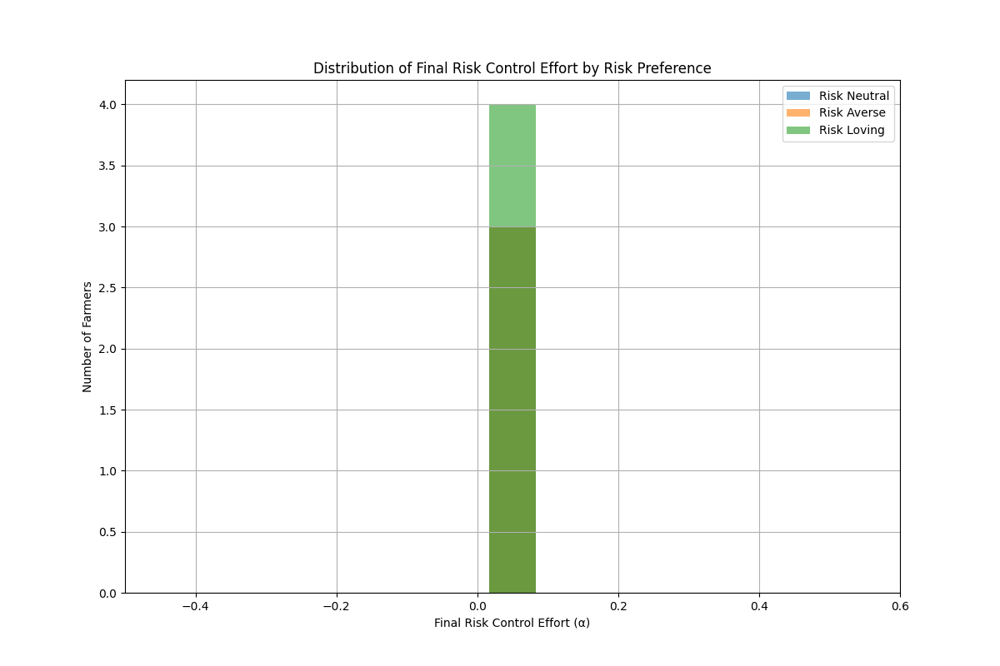Effort Distribution Over Time
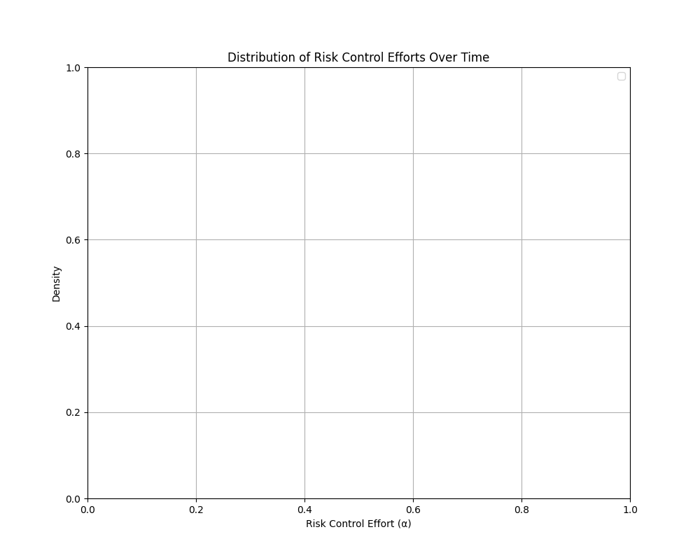Effort Heatmap
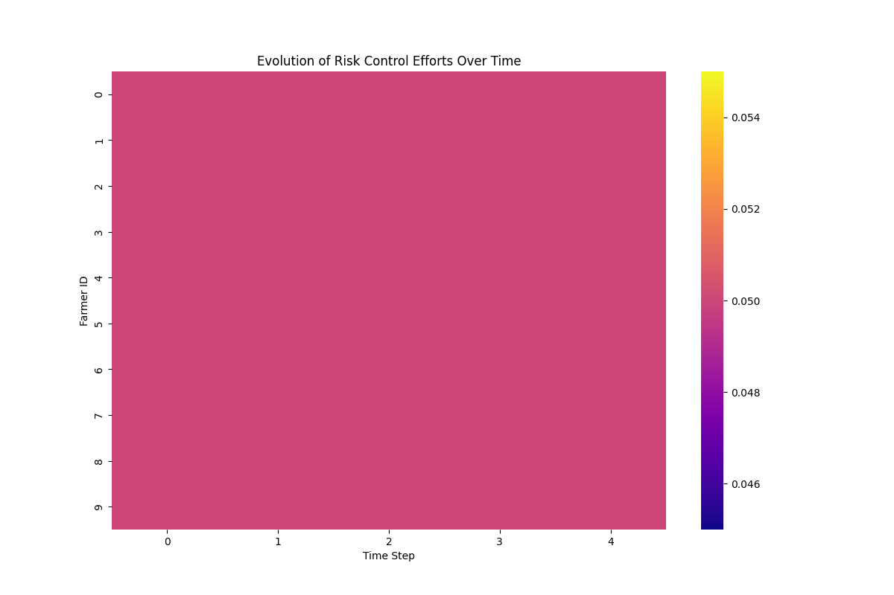Farmer Network
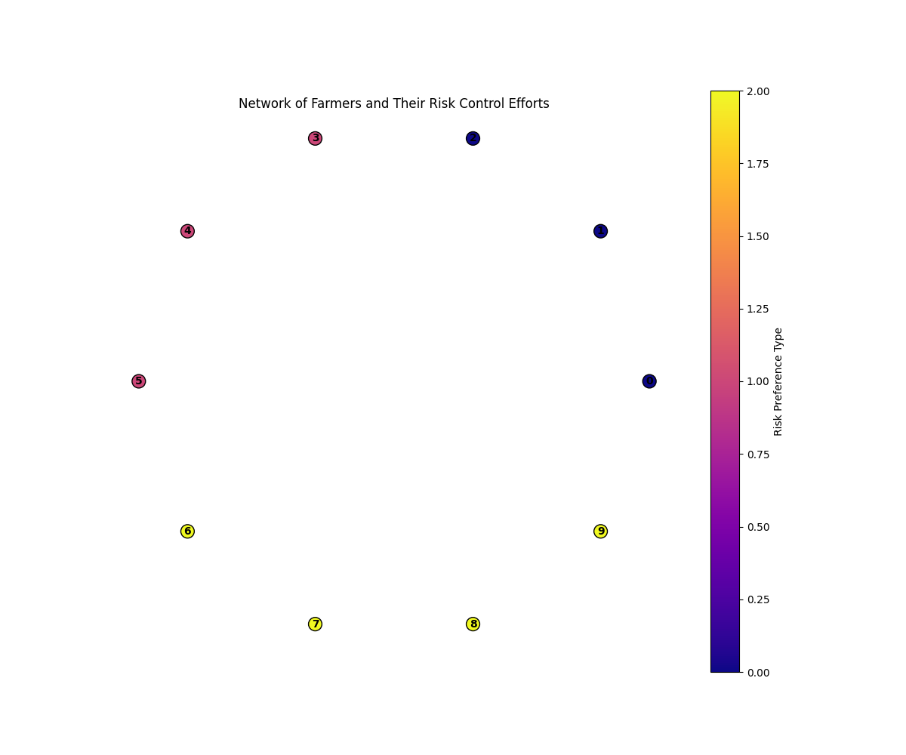Individual Trajectories 0
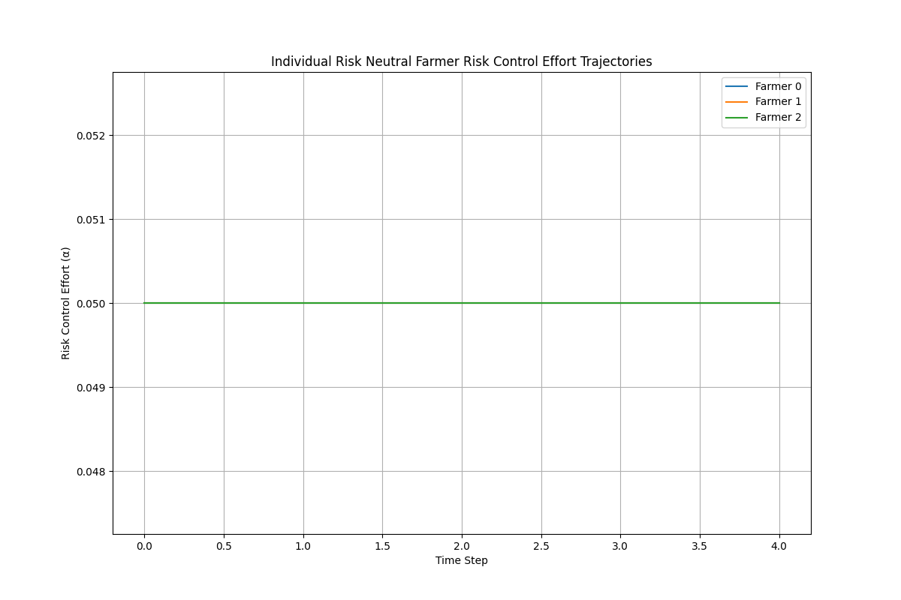Individual Trajectories 1
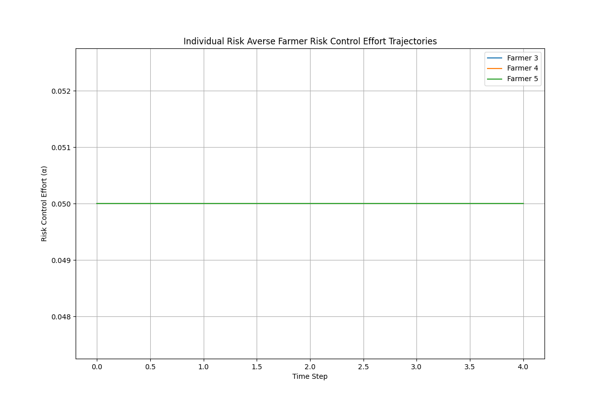Individual Trajectories 2
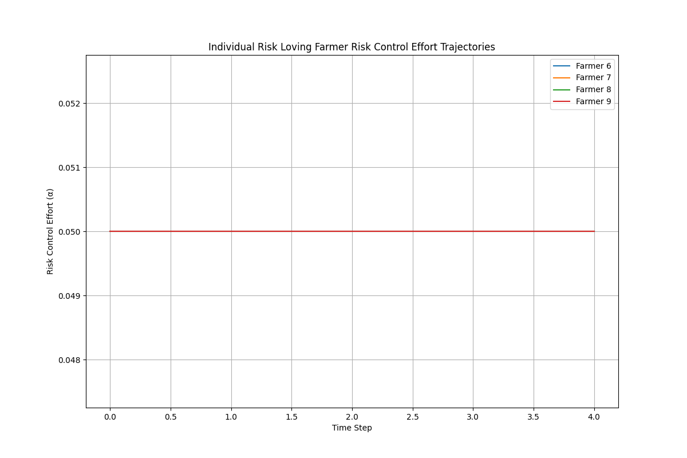Sensitivity P
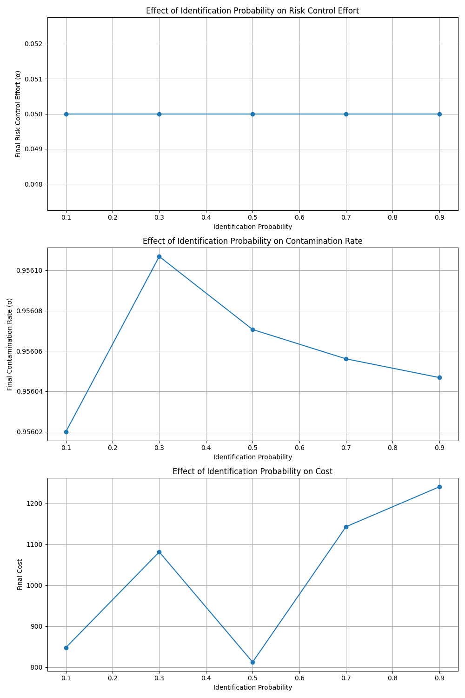Sensitivity Beta
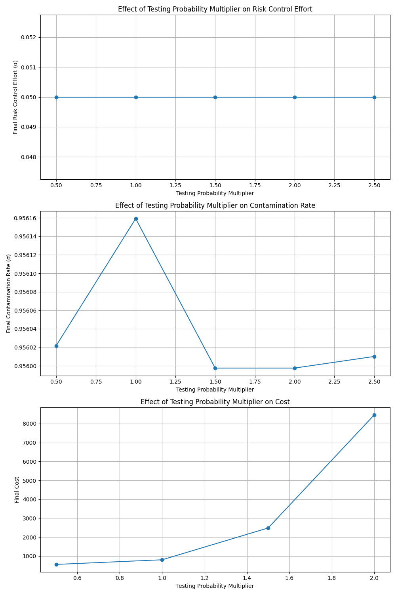Sensitivity F
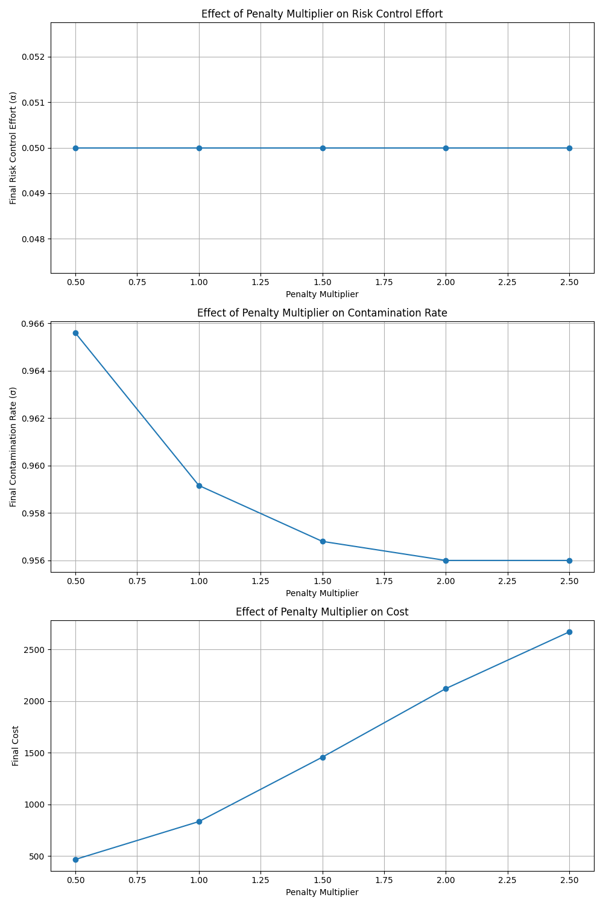Simulation Results
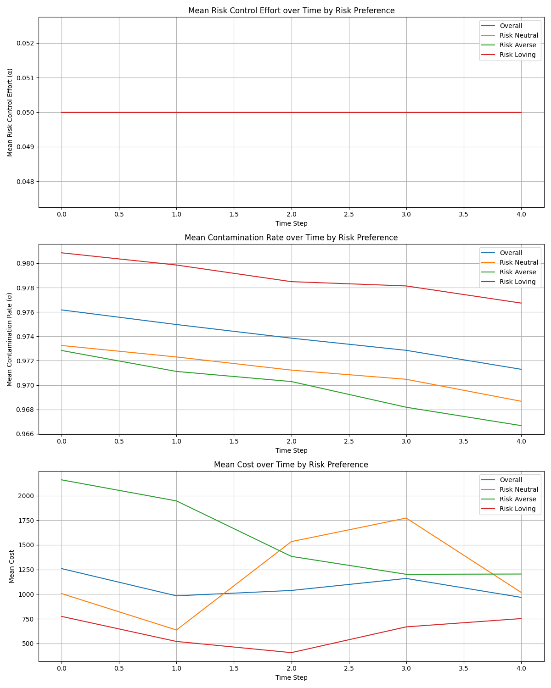Technology Over Time
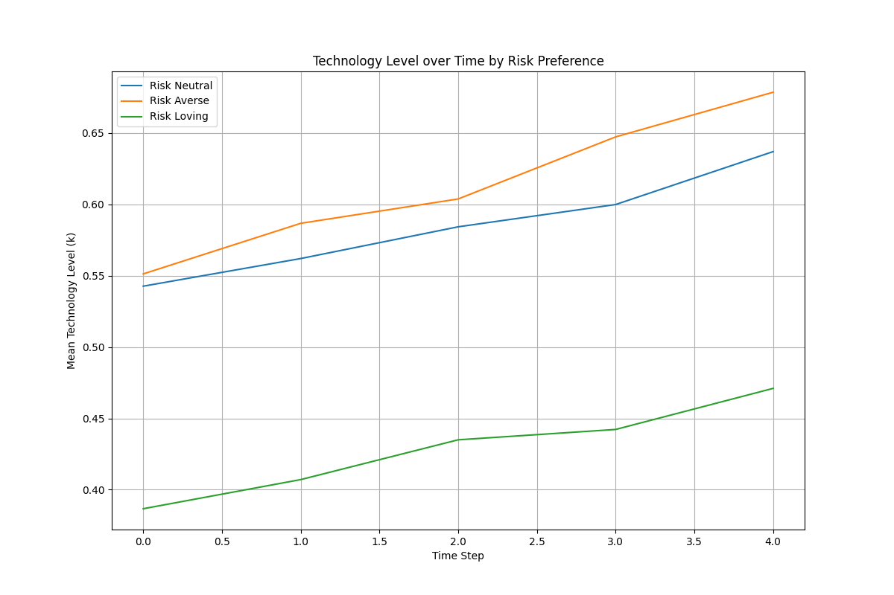Technology Vs Contamination
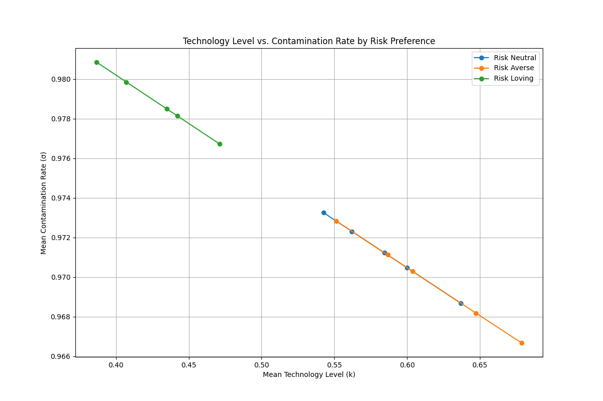Technology Vs Effort
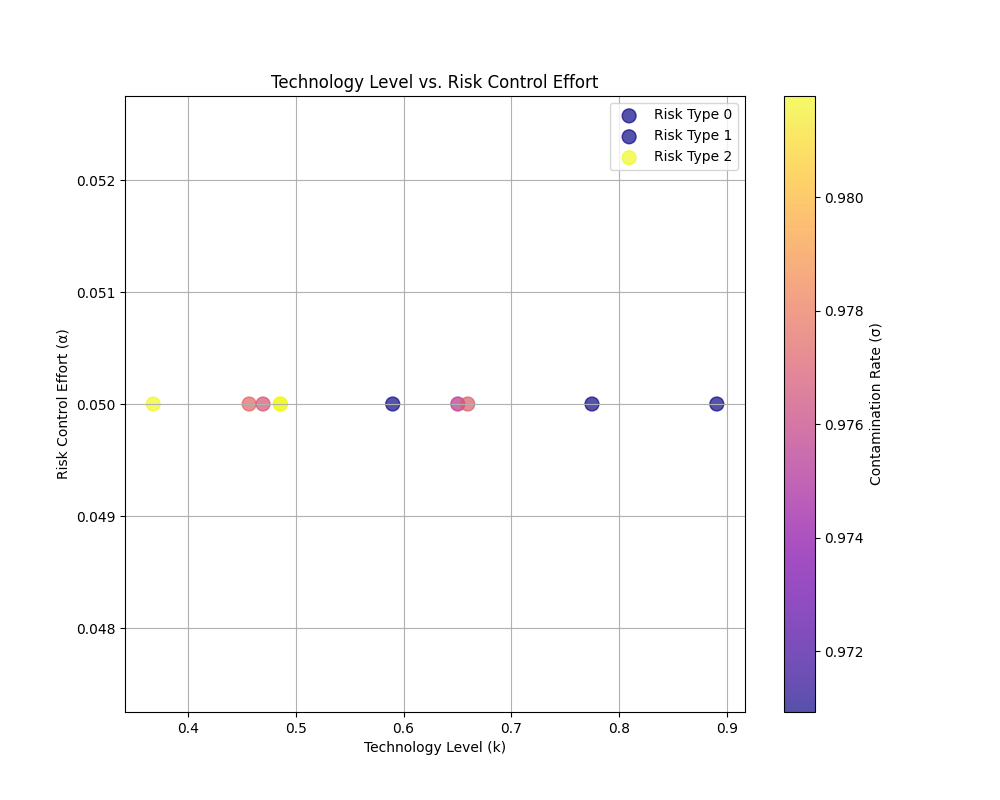Conclusions
The simulation results demonstrate how farmers with different risk preferences adjust their risk control efforts over time. Risk averse farmers tend to invest more in risk control measures and technology, resulting in lower contamination rates but higher costs. Risk loving farmers take more chances with lower control efforts, which can result in higher contamination rates but potentially lower costs in some scenarios.
The model illustrates the importance of considering heterogeneous risk preferences in food safety regulation and policy design. Effective policies should consider the diverse behaviors of different farmer types to achieve optimal food safety outcomes.